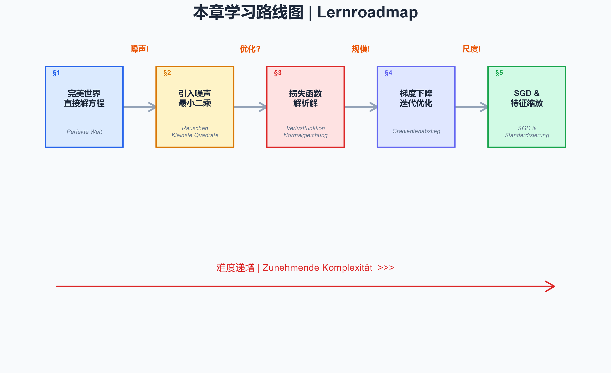

查看代码 | Code anzeigen
par(mar = c(0.5, 0.5, 2, 0.5), bg = "#F8FAFC")
plot(NULL, xlim = c(0, 10), ylim = c(0, 7), axes = FALSE,
xlab = "", ylab = "", main = "")
title(expression(bold("本章学习路线图 | Lernroadmap")),
cex.main = 1.4, col.main = "#1E293B")
# Draw path / 画路径
steps_x <- c(1, 3, 5, 7, 9)
steps_y <- c(5.5, 5.5, 5.5, 5.5, 5.5)
arrows(steps_x[-5] + 0.7, steps_y[-5], steps_x[-1] - 0.7, steps_y[-1],
col = "#94A3B8", lwd = 2.5, length = 0.12)
# Step boxes / 步骤方块
labels_cn <- c("完美世界\n直接解方程", "引入噪声\n最小二乘",
"损失函数\n解析解", "梯度下降\n迭代优化",
"SGD &\n特征缩放")
labels_de <- c("Perfekte Welt", "Rauschen\nKleinste Quadrate",
"Verlustfunktion\nNormalgleichung", "Gradientenabstieg",
"SGD &\nStandardisierung")
colors <- c("#DBEAFE", "#FEF3C7", "#FEE2E2", "#E0E7FF", "#D1FAE5")
borders <- c("#2563EB", "#D97706", "#DC2626", "#6366F1", "#16A34A")
for (i in 1:5) {
rect(steps_x[i] - 0.7, steps_y[i] - 0.9, steps_x[i] + 0.7, steps_y[i] + 0.9,
col = colors[i], border = borders[i], lwd = 2)
text(steps_x[i], steps_y[i] + 0.2, labels_cn[i], cex = 0.72, font = 2, col = "#1E293B")
text(steps_x[i], steps_y[i] - 0.55, labels_de[i], cex = 0.52, col = "#64748B", font = 3)
}
# Difficulty arrow / 难度箭头
arrows(0.5, 1.5, 9.5, 1.5, col = "#DC2626", lwd = 2, length = 0.15)
text(5, 1.9, "难度递增 | Zunehmende Komplexität >>>", cex = 0.85, col = "#DC2626")
# Trigger labels / 触发标签
triggers <- c("", "噪声!", "优化?", "规模!", "尺度!")
for (i in 2:5) {
text(steps_x[i] - 1, steps_y[i] + 1.3, triggers[i],
cex = 0.7, col = "#EA580C", font = 2)
}
# Numbering / 编号
for (i in 1:5) {
text(steps_x[i] - 0.5, steps_y[i] + 0.75, paste0("§", i),
cex = 0.6, col = borders[i], font = 2)
}